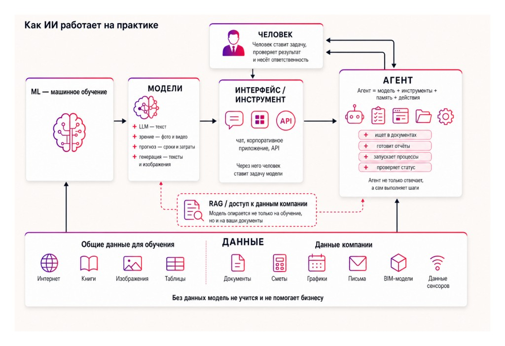
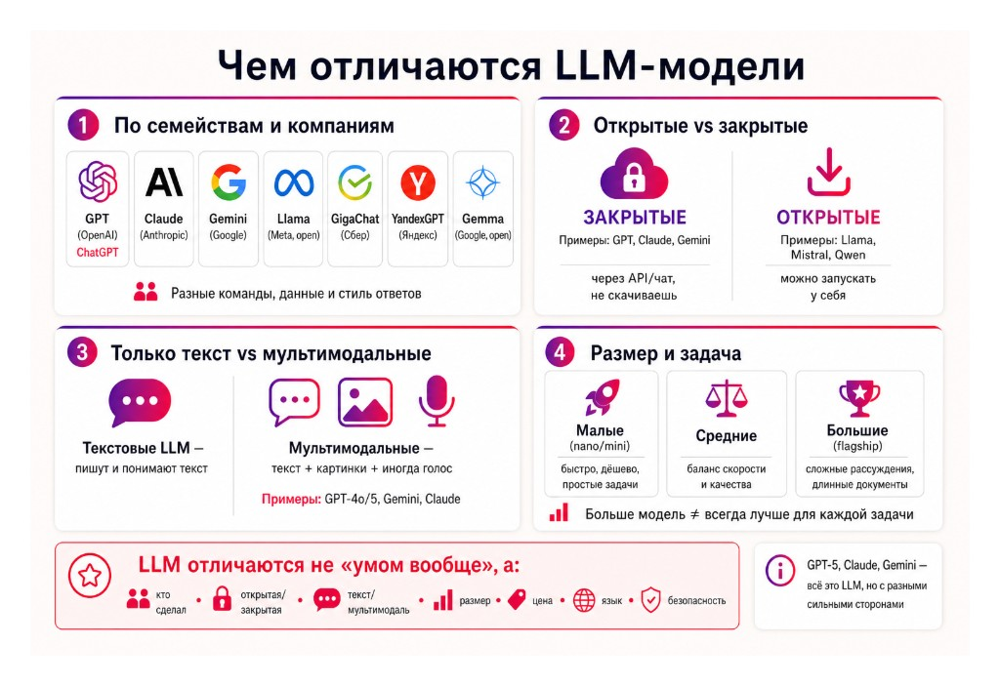
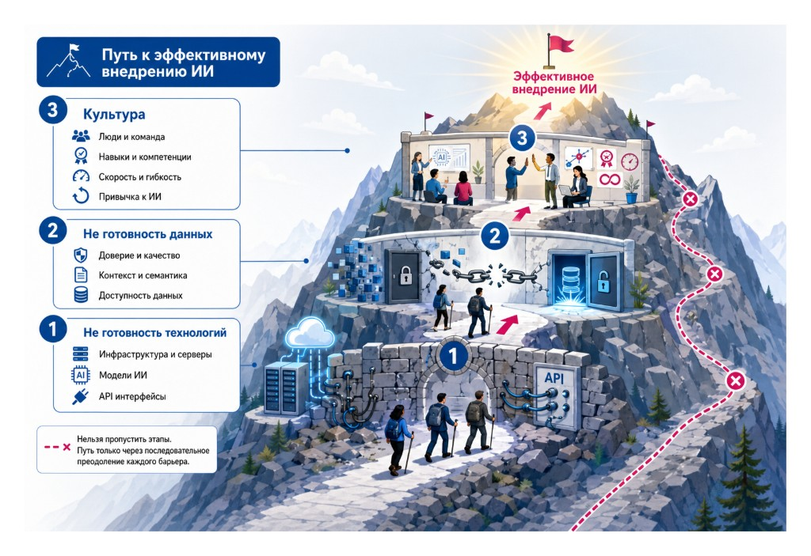
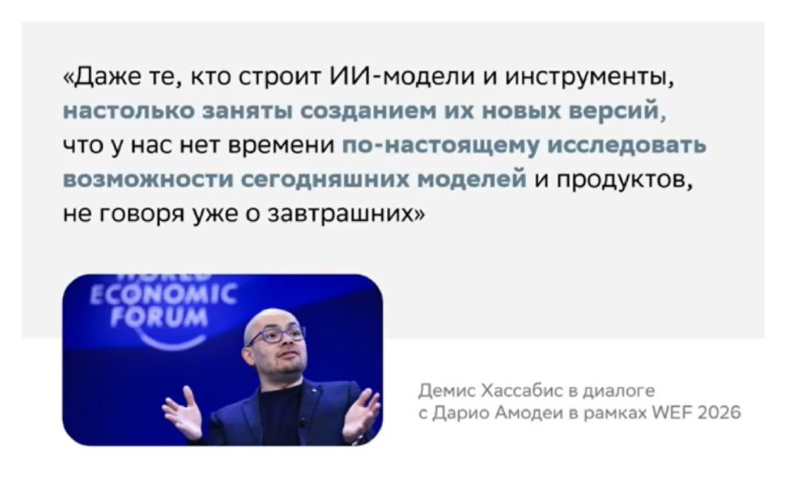
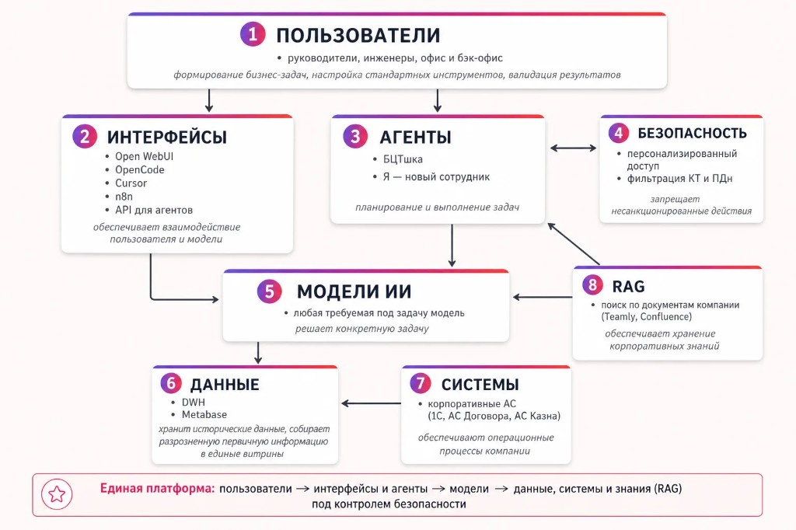
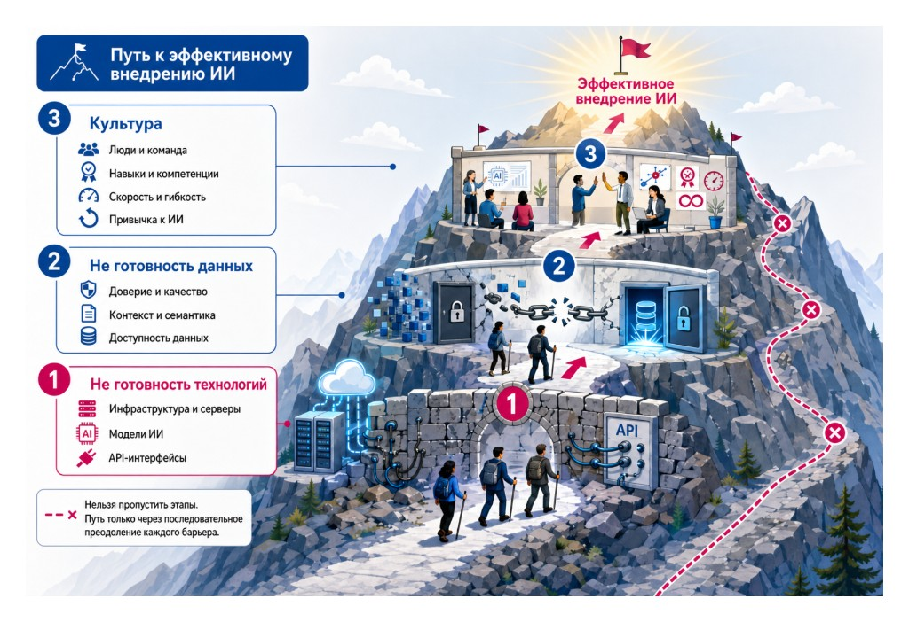
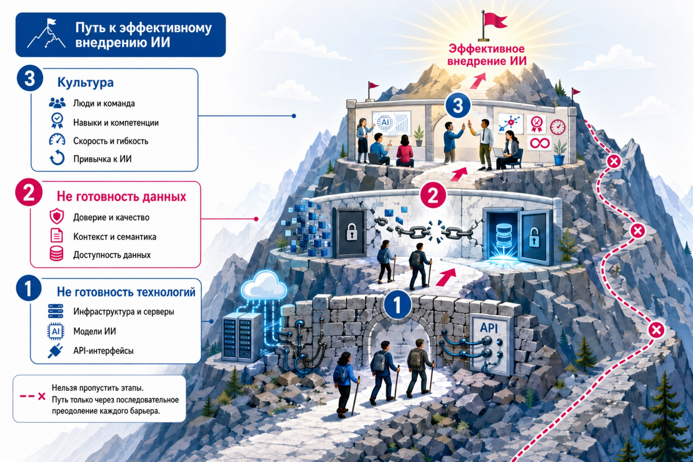
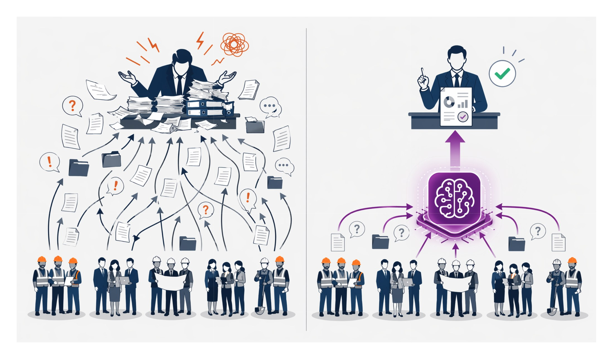
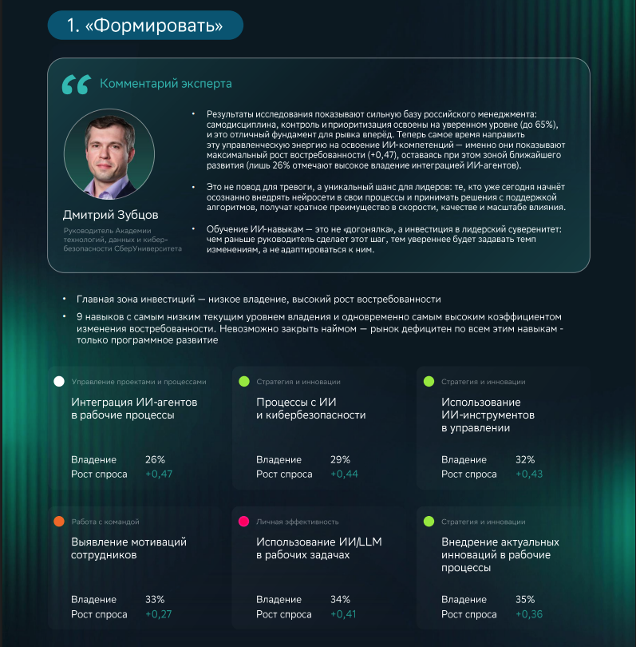
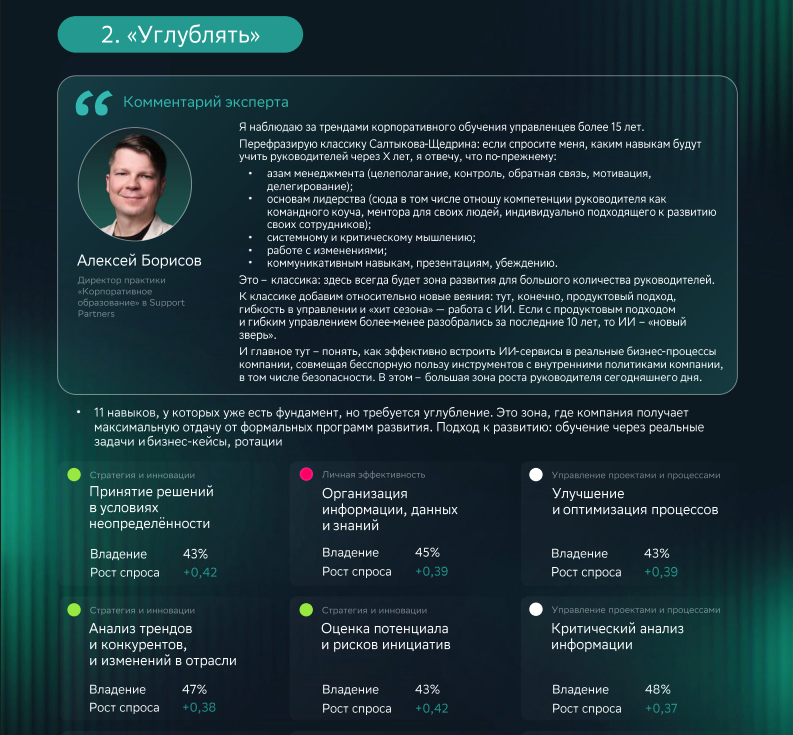

Слайд 01 · Карта понятий
Из чего состоит искусственный интеллект
Договоримся о терминах

- Модель — это программа, которую заранее обучили на большом количестве примеров, чтобы она могла решать похожие задачи сама: понимать текст, узнавать объекты на фото, прогнозировать сроки или генерировать ответ.
- Агент — это ИИ, который не только отвечает на вопрос, а сам выполняет задачу: ищет информацию, запускает действия, проверяет результат и двигается к цели.
- RAG — это способ отвечать не из общей «памяти» модели, а с опорой на ваши документы: система сначала находит нужные файлы, а потом модель формулирует ответ по ним.
- Промпт — это текст вашего запроса к модели: что нужно сделать, в каком виде и с какими условиями.
Слайд 02 · Выбор модели
LLM-модели и как их выбрать
Для разных задач проходят разные модели

Параметры выбора модели для задачи
- Контекст
- Размер модели
- Работа с инструментами
- Текст / мультимодальность
- Качество и язык
- Открытая / закрытая
- Безопасность данных
- Цена
- Скорость
- Подходит ли под задачу (RAG / агенты / интеграции)
Слайд 03 · Внедрение
Путь к эффективному внедрению ИИ
Пропустить барьер нельзя, только последовательное преодоление
но можно подготовится заранее к следующему барьеру

- 1. Технологии. Инфраструктура, серверы, модели ИИ и API — фундамент, без которого дальше не поехать.
- 2. Данные. Доверие и качество, контекст и семантика, доступность данных — второй барьер на пути.
- 3. Культура. Люди, навыки, скорость и привычка к ИИ — финальный рубеж перед эффективным внедрением.
Слайд 04 · Формула
Произведение, а не сумма
Технологии
- инфраструктура
- модели
- интерфейсы и API
Данные
- доверие
- контекст
- доступность
Культура
- люди
- скорость адаптации
- привычка к ИИ
Слайд 05 · Технологии
Технологии
В бизнесе зарабатывают не самые современные технологии, а те, которые стабильно встроены в операционные процессы

- Демис Хассабис — основатель DeepMind
- Дарио Амодеи — основатель Anthropic
- WEF — World Economic Forum
Слайд 06 · Архитектура
Архитектура единой платформы Strana.AI
Единая платформа: от инфраструктуры и данных до агентов в бизнес-процессах. Не набор разрозненных пилотов — целостная система с общими правилами.

- Слои, не острова. Каждый уровень связан контрактами и стандартами — без «чёрных ящиков» между командами.
- Strana.AI как шина. Единая точка доступа к моделям, знаниям и инструментам — без дублирования интеграций в каждом продукте.
- Безопасность по умолчанию. Изоляция сред, контроль доступа к данным и аудит запросов на всех уровнях стека.
- Переиспользование. Новый кейс подключается к готовым блокам платформы, а не строит архитектуру с нуля.
Слайд 07 · Сравнение
Страна и мир
Сравниваем зрелость по ключевым направлениям. Разумный уровень — достаточный для масштабирования бизнес-эффекта без избыточной сложности.
Gemma 4, gpt-oss-120b — для задач в конфиденциальном контуре, GLM-5.2 (сложная логика) + GPT/Claude/Gemini/DeepSeek/Qwen по необходимости
БЦТшка, помощник маркетолога, онбординг «Я — новый сотрудник», «Ищем землю»…
Доступ к витринам Metabase — через MCP-сервер.
Слайд 08 · Доступность
Технологии не должны быть преградой
Технология ускоряет решение задачи, а не становится отдельным проектом. Сложность остаётся в платформе — сотрудник работает с результатом.
- Скрытая сложность. Инфраструктура, модели и интеграции — на платформе. В интерфейсе остаётся только задача и ответ.
- Быстрый старт. Пилот за дни, не месяцы: готовые коннекторы, шаблоны агентов, единая авторизация.
- Язык бизнеса. Формулируем цель и контекст — технические детали не перекладываем на заказчика решения.
- Масштаб без боли. То, что сработало в пилоте, переносится в прод без переписывания архитектуры с нуля.
Слайд 09 · Барьеры
Барьер технологий
Все системы и технологии готовы к реализации проектов

- Технологии — первый барьер. Для старта нужны инфраструктура, модели ИИ и API-интерфейсы — без них проект не перейдёт из идеи в работу.
- Данные создают опору. Важны не только объём, но и доверие к данным, доступность, контекст и единая семантика.
- Культура закрепляет результат. Команда, компетенции, скорость изменений и привычка работать с ИИ определяют масштаб эффекта.
- Этапы не пропускаются. Устойчивый результат даёт последовательное снятие всех трёх барьеров.
Слайд 10 · Данные
Данные
Три типичные ловушки — любая из них блокирует ИИ не хуже, чем полное отсутствие данных.
Нет данных
Нет цифровых систем процессов продаж и нет структурированных данных.
Страна 2023
Есть данные, но нет доверия
Бизнес имеет данные, но не принимает на них решения: не выстроены подходы к их формированию.
Страна 2026
Избыток данных
Каждое подразделение верит только своим данным и создаёт точки и витрины под себя.
Страна 2027
Слайд 11 · Данные
Данные
Структурированные процессы позволяют собирать достаточное количество витрин
Примеры витрин
- dm_mb_bld_contractДоговоры в АС Договоры: реестр договоров строительства и поставки, контрагенты и объекты, суммы и авансы, связь с ТЗ и тендером
- dm_mb_bld_contract_itemСостав предмета договора: номенклатура и бюджетные статьи по договору для анализа закупок
- dm_mb_bld_add_agrДополнительные соглашения к договорам: изменение условий, причины и суммы от ПМ, ГИП, РСУ, сроки и статусы
- dm_mb_bld_task_contractsЗадачи по маршруту согласования договоров: исполнители и сроки, просроченные задачи, контроль прохождения маршрута
- dm_mb_bld_tenderТендерные процедуры на Портале партнёров: выбор подрядчика по объектам, ход процедуры и сроки, связь с ТЗ на СМР
- dm_mb_bld_tender_requestЗаявки подрядчиков на тендеры: сравнение цен и НДС, квалификация и рекомендации, победители аукциона
- dm_mb_bld_tz_smrТехнические задания на СМР в 1С:ДО: подрядчик и тендер, смета и аванс, статус согласования и жизненный цикл БП
- dm_mb_bld_tz_goodsНоменклатура товаров и услуг в составе ТЗ на СМР: закупаемые позиции и статьи БДДС
- dm_mb_bld_tz_statusИстория статусов ТЗ на СМР: переходы между этапами согласования, динамика объёмов работ и материалов
- dm_mb_bld_tz_tasksЗадачи по маршруту согласования ТЗ на СМР: исполнители и сроки, результат выполнения, связь с ТЗ
- dm_mb_bld_mss_modelРасчёты стоимости строительства в MSS: сметная стоимость по ТЗ, разбивка работ и материалов, контроль утверждения
- dm_mb_bld_fid_fact_contractor_employeeПосещаемость рабочих подрядчиков по Face ID: численность, смены и факт прохода за месяц по объекту и субподрядчику
- dm_mb_bld_counterparty_contactКонтактные лица контрагентов в MDM: представители
Примеры витрин
- dm_mb_sls_amo_lead_w_add_attributeСделки продажи недвижимости в AmoCRM: аналитика воронки, объекты помещение, условия покупки и ДДУ, агентский канал
- dm_mb_sls_amo_lead_status_historyИстория движения сделок по воронкам и этапам AmoCRM: смена этапа, переход между воронками, длительность на этапе
- dm_mb_sls_amo_sales_metricsДинамика метрик по этапам воронок продаж (Онлайн/Офлайн/КЦ) в разрезе домов и каналов продаж (агентские/прямые)
- dm_mb_sls_1c_trade_paymentПоступившие платежи по сделкам AmoCRM из 1С Top
Слайд 12 · Данные
Данные
Доверие к данным — внутренний параметр

Слайд 13 · Данные
Текущий уровень инфраструктуры данных позволяет принимать все требуемые решения

Слайд 14 · Данные
От хаоса данных — к управляемым решениям с ИИ

- Без единой платформы руководитель тонет в потоке информации. Письма, отчёты, вопросы и исключения приходят из разных подразделений — и вместо управления получается ручная сборка картины.
- ИИ-платформа собирает разрозненные данные в один контур. Сотрудники на объектах, в офисе и в бэк-офисе работают через общие интерфейсы, агентов и корпоративные знания — и информация перестаёт теряться по пути.
- Руководитель получает не «ещё один отчёт», а основу для решения. Он формулирует задачу, проверяет результат и принимает решение — а не разгребает хаос вручную.
Слайд 15 · Культура
Модель компетенций руководителя трансформируется
Классический менеджмент + управление людьми и агентами + культура внедрения
Классический менеджмент
остаётся базой
Из чего состоит
- постановка целей
- мотивация
- переговоры
- решение конфликтов
- сбор результата через команду
Управление мультиагентной сетью с людьми
новый слой
Из чего состоит
- формирование бизнес-задач — что нужно сделать и зачем
- настройка стандартных инструментов — как это будет работать в процессе
- валидация результатов — проверка качества и ответственность за итог
Плюс 4 практических навыка
- ставить задачи людям и агентам
- проверять качество
- связывать агентов между собой
- встраивать ИИ в реальные процессы
Культурные компетенции
для зрелого внедрения ИИ
4 слоя
- Data Literacy — понимать данные, задавать правильные вопросы
- Доверие и принятие ошибок — не бояться признавать ошибки ИИ
- Скорость адаптации — быстро тестировать, не застревать в согласованиях
- Кросс-функциональность — работать на стыке бизнеса и ИТ
Слайд 16 · Культура
Новые skills формируют модель компетенций уже сейчас


Слайд 17 · Культура
От первых трудностей до агентов — полгода
Типичная траектория внедрения ИИ: рост интереса → критическая зона → первые рабочие агенты
Как сократить критическую зону · 3 опоры
Закономерность личного вовлечения
Учитывать кривую вовлечённости сотрудника: пик в первые 2 недели и спад после 2 месяцев.
Резервирование технологического обеспечения
Технология не должна быть причиной неудачи при прохождении критической зоны.
Эмоциональная поддержка
Быть рядом с «амбассадорами» до момента рождения первых агентов.
Прокрутка колесом · стрелки ↑ ↓ · клик по точкам